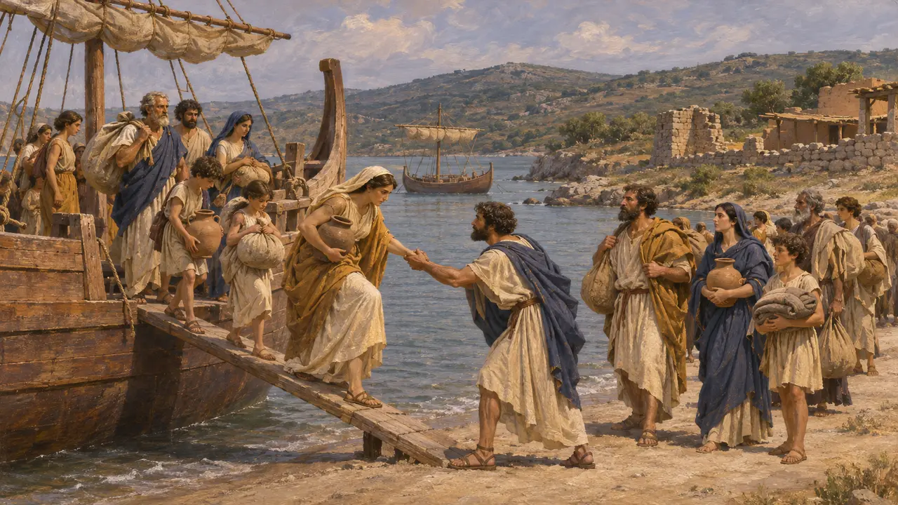
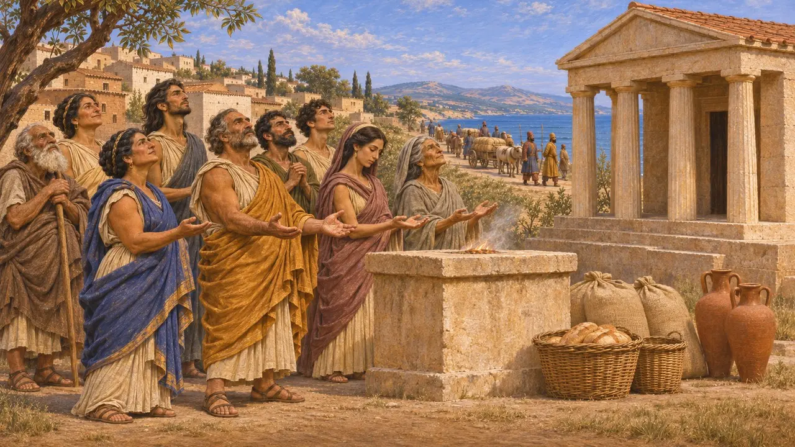
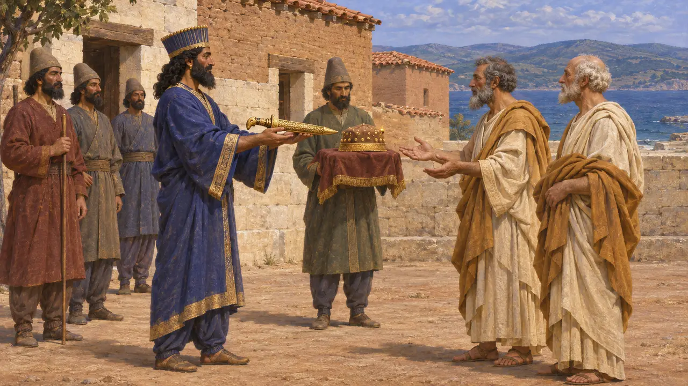
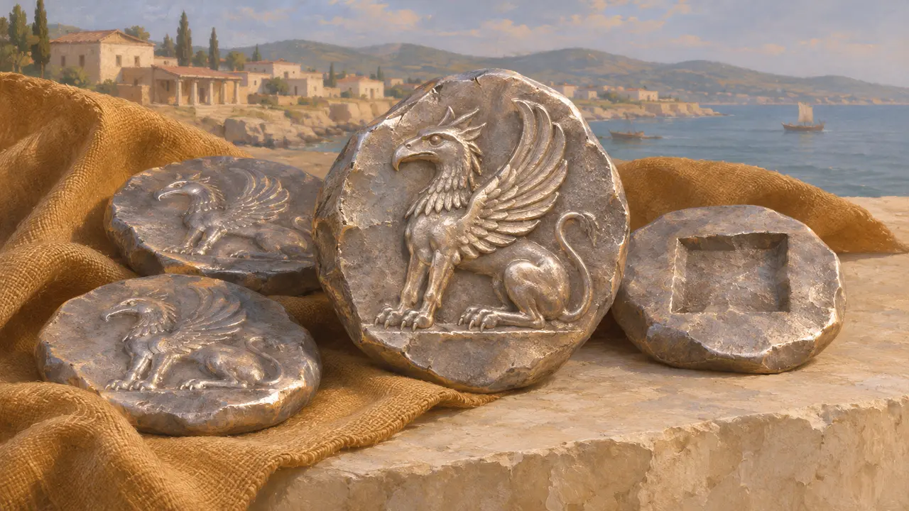

阿布德拉
色雷斯海岸的希腊城市,由泰奥斯人建立,位于薛西斯之路上,公元前545-479年
阿布德拉是色雷斯海岸、涅斯托斯河以东的一座希腊城市。希罗多德说,泰奥斯人在公元前545年前后逃避哈尔帕哥斯的围攻时建立了这座城市。公元前480年,它正位于薛西斯大军行进的道路上,而它的一位公民说出了这次远征中最有名的笑话。
游戏中： 阿布德拉出现在阿托斯关卡的编年史和人物对话中,原因是那位阿布德拉人曾感谢诸神,因为国王一天只吃一顿饭。

在逃亡中建立
古代记述希罗多德说,哈尔帕哥斯筑起土垒攻下泰奥斯城墙后,泰奥斯人登上战船驶往色雷斯,在那里建立了阿布德拉。此前克拉佐美纳伊的提美西奥斯曾试图在此定居,却被色雷斯人赶走,泰奥斯人仍把他尊为英雄加以祭祀。
Herodotus 1.168

一日一餐
古代记述薛西斯行军路线上的城市必须供养他的大军。希罗多德说,阿布德拉的美伽克列昂告诉他的同胞,带着妻子前往神庙,感谢诸神薛西斯一天只吃一顿饭;若他还下令准备早餐,他们就只能逃亡或是倾家荡产。
Herodotus 7.118-120

国王的宾友
古代记述据希罗多德记载，薛西斯从希腊撤退时来到阿布德拉，与当地人缔结宾谊，赠给他们一柄金质阿基纳克斯短剑和一顶缀金片的头冠。阿布德拉人说，正是在那里，他第一次安心解开了腰带；希罗多德并不相信这种说法。
Herodotus 8.120

格里芬钱币
见于史载阿布德拉约从公元前540年起铸造银币,币面是狮鹫,即其母邦泰奥斯的徽记。后来,这座城市以哲学家德谟克利特和普罗泰戈拉的故乡而闻名。
Head, Historia Numorum, Thrace; Diogenes Laertius 9.34, 9.50
来源
- Herodotus 1.168, 7.109, 7.118-120, 8.120
- C. M. Kraay, Archaic and Classical Greek Coins, 1976